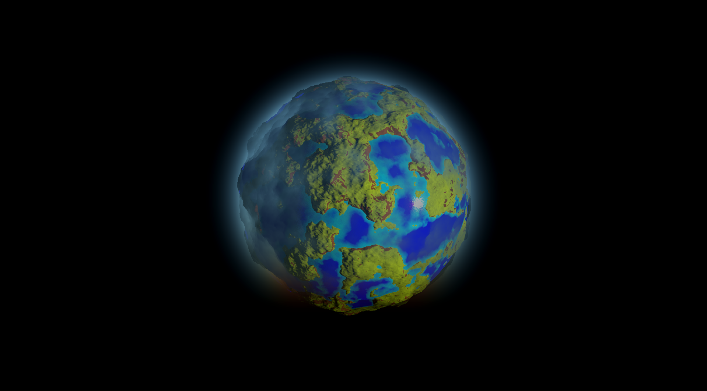

Projects
Universe Prototype [WIP]
Currently not much to it. I'm still working my way through making interesting and dynamic planets, and atmospheric systems via Rayleigh Scattering.
Circuit Bricker
This was the first game that I felt comfortable actually releasing to the public. It didn't really have much particularly special going for it other than some cool power-ups and lots of particle effects (because who doesn't like particle effects =D) but I am very proud of this fun but a little buggy mess. Link in case anyone wants to try the game out. It's genuinely good fun for a bit if you like brick breaker style games.


Guild Inc.
I really enjoy incremental games so I decided to take a stab at making one. It was heavily inspired by another game actually called Egg Inc. (Where I got my uncreative name =D). There a lot of aspects of that game that I really enjoyed and wanted to incorporate them into a different theme with a few new twists here and there.
Unfortunately, the pictures on the Play Store are a bit outdated, the game looks significantly better now, like night and day with transparent water, my own custom models instead of free assets, and more visual and audio effects to give them a nicer feel. I will be updating the images soon.
Link in case any of you would like to try it out. Feel free to provide any feedback, I'd more than appreciate it =D.